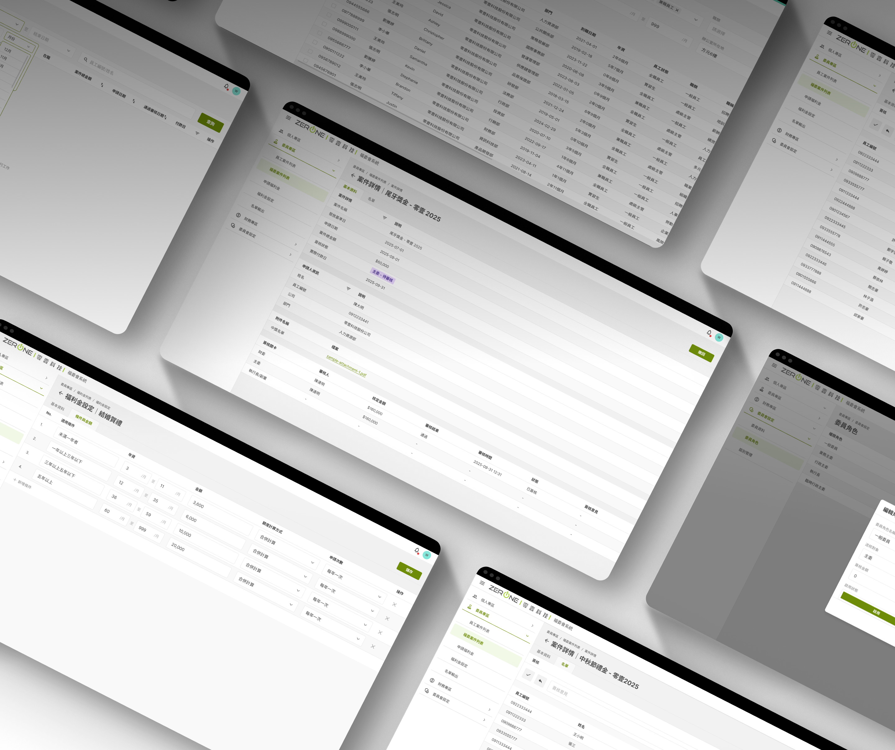

|
9
Pages of Data-Output SpecThe client's spec covered monthly reports, split routing, export fields. Thorough on how data flows — but it never said who does what, in what situation. That layer had to be built first.
|
|
6
Benefit Types, Each Tiered DifferentlyTiered by tenure, by relationship, by number of children, by two separate start-date cutoffs — plus a raffle with its own eligibility and exclusion lists.
|
|
10+
The Rules Get RewrittenThe raffle's exclusion clause was added last year. The travel cutoff changes annually. But the change has a boundary: a wedding gift is always "tenure → amount" — only the numbers move. Structure stable, parameters not. That distinction decided the architecture.
|



1
/Problems
Metrics
UX Planning
Styles
Iterations
Handoff & Design System
Outcomes